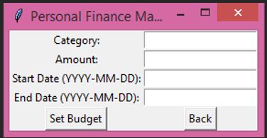
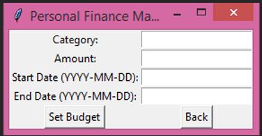

Divyang Disha Seva Trust
Role: Front-End Developer
Description: I took on the role of Front-End Developer for the Divyang Disha Seva Trust, a non-profit organization focused on supporting disabled individuals through volunteer work and donations. This project was particularly close to my heart, as it allowed me to contribute to a meaningful cause while honing my web development skills.
My responsibilities included designing and developing the website's user interface, ensuring it was both user-friendly and accessible. I worked closely with the organization to understand their needs and translated those requirements into a functional and visually appealing website. The site was built using HTML, CSS, and JavaScript, and it features a responsive design that ensures a seamless experience across various devices.
One of the key challenges was ensuring the site was accessible to a wide audience, including those with disabilities. I implemented best practices for accessibility, such as proper semantic HTML, keyboard navigation, and screen reader support. The site also includes features for users to easily sign up as volunteers or make donations, which are critical to the organization's mission.
The website has received positive feedback from both the organization and its users, and it continues to play a vital role in connecting volunteers with those in need. This project not only improved my technical skills but also deepened my understanding of how technology can be used to make a difference in people's lives.
Links: Live Site, GitHub Repository


Personal Finance Manager
Role: Full-Stack Developer
Description: The Personal Finance Manager project is a comprehensive financial management tool designed to help users track their expenses, manage budgets, and generate detailed financial reports. My role as a Full-Stack Developer involved both front-end and back-end development, providing me with a well-rounded experience in building robust web applications.
The application was developed using Python for the backend, ensuring secure data handling and efficient processing. On the front-end, I used HTML, CSS, and JavaScript to create an intuitive user interface that allows users to input and categorize their expenses with ease. The application also includes features for setting financial goals and tracking progress over time.
One of the most challenging aspects of this project was designing the financial reporting system. It required me to implement complex algorithms to analyze users' spending patterns and provide insightful recommendations. The reports generated by the application are designed to be clear and actionable, helping users make informed financial decisions.
This project taught me the importance of combining functionality with user experience. By focusing on both aspects, I was able to create an application that is not only powerful but also easy to use. The Personal Finance Manager has been well-received by users, many of whom have reported improvements in their financial management as a result of using the tool.
Links: GitHub Repository
 
